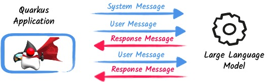
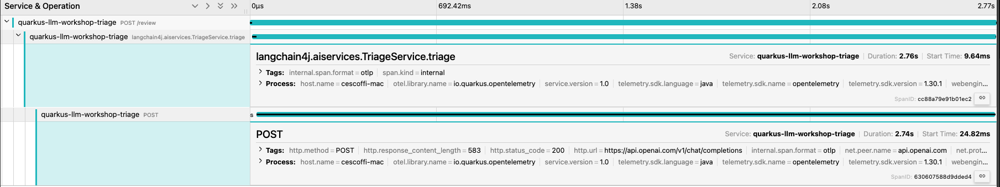

Slot 1: Unveiling the Potential - Integrating OpenAI with Quarkus#
In this first slot, we explore the potential of large language models like GPT-3/GPT-4 and how they integrate into Quarkus applications. We walk through the process of integration, discussing the benefits and challenges of incorporating large language models into applications and explaining how Quarkus integration handles these challenges.
Interacting with an LLM#
LLM stands for Large Language Model. However, you do not interact with them directly, you use a chat model.
It follows a conversational pattern: you send a prompt, and the model responds with a message. The conversation is a sequence of messages and responses.

The LLM answers to the user request and can use the context of the conversation to provide a more accurate response (.i.e. the set of already exchanged messages from the conversation).
When integrating an LLM into an application, you need to define the prompt and the expected response. The prompt is a message sent to the LLM, and the response is the message returned by the LLM.
In this slot, we will see how you can easily model your interaction with the LLM with Quarkus and the Quarkus LangChain4J extension. We are going to use Azure OpenAI as an example, but Quarkus can interact with many other LLMs.
The triage application#
In this slot, we look at the code in the triage-application directory.
This application receives user reviews and classifies them as positive or negative.
It’s a simple application but serves as a good example of integrating OpenAI with Quarkus.
In a terminal, navigate to the triage-application directory and run the following command:
Info
The API key is used to access the Azure OpenAI service. Make sure you got it following the instructions in the appendix.
This starts the application in development mode. Open a browser and navigate to http://localhost:8080 to see the application’s frontend. The frontend is a simple form allowing you to submit a review. Upon submission, the application classifies it as positive or negative and displays the result.
Anatomy of the application#
Let’s delve into the code. Firstly, let’s explore the TriageService interface:
package io.quarkiverse.langchain4j.workshop.triage;
import dev.langchain4j.service.SystemMessage;
import dev.langchain4j.service.UserMessage;
import io.quarkiverse.langchain4j.RegisterAiService;
@RegisterAiService
public interface TriageService {
@SystemMessage("""
You are working for a bank. You are an AI processing reviews about financial products. You need to triage the reviews into positive and negative ones.
You will always answer with a JSON document, and only this JSON document.
""")
@UserMessage("""
Your task is to process the review delimited by ---.
Apply a sentiment analysis to the passed review to determine if it is positive or negative.
The review can be in any language. So, you will need to identify the language.
For example:
- "I love your bank, you are the best!", this is a 'POSITIVE' review
- "J'adore votre banque", this is a 'POSITIVE' review
- "I hate your bank, you are the worst!", this is a 'NEGATIVE' review
Answer with a JSON document containing:
- the 'evaluation' key set to 'POSITIVE' if the review is positive, 'NEGATIVE' otherwise, depending if the review is positive or negative
- the 'message' key set to a message thanking the customer in the case of a positive review, or an apology and a note that the bank is going to contact the customer in the case of a negative review. These messages must be polite and use the same language as the passed review.
---
{review}
---
""")
TriagedReview triage(String review);
}
This interface defines the contract between the application and the AI service. It contains the prompt that will be sent to the AI service and the expected response.
Quarkus does not use a specific client. It proposes using an interface and a set of annotations to model and invoke the AI service. It encapsulates the complexity of the AI service, allowing you to focus on the business logic.
The @RegisterAiService annotation registers the service.
Quarkus uses this annotation to generate the client code (at build time) and inject the client into the application.
The @SystemMessage and @UserMessage annotations define the messages (prompt) sent to the AI service.
@SystemMessage defines the scope, context, and goal of the AI service.
@UserMessage defines the message sent to the AI service.
Note that the triage method receives a String as a parameter (the user review). The prompt can reference the parameter using the {review} placeholder.
Tip
Under the hood, Quarkus uses qute as a template engine.
The prompt explains to the AI service what it needs to do and what response it should return.
Thus, the triage method returns a TriageReview:
package io.quarkiverse.langchain4j.workshop.triage;
import com.fasterxml.jackson.annotation.JsonCreator;
public record TriagedReview(Evaluation evaluation, String message) {
@JsonCreator
public TriagedReview {
}
}
The TriageReview is a simple record that contains the evaluation (positive or negative) and the message to send to the user.
Now, let’s see how we can use your AI service:
package io.quarkiverse.langchain4j.workshop.triage;
import jakarta.inject.Inject;
import jakarta.ws.rs.POST;
import jakarta.ws.rs.Path;
@Path("/review")
public class ReviewResource {
@Inject
TriageService triage;
record Review(String review) {
}
@POST
public TriagedReview triage(Review review) {
return triage.triage(review.review());
}
}
The ReviewResource is a simple JAX-RS resource that receives a Review and delegates the triage to the TriageService.
The triage method is called from the frontend you saw earlier.
The TriageService is injected by Quarkus and exposes the interface defined earlier.
So, we do not leak any details about the AI service.
Configuring the AI service#
In the application.properties file, you will see the following (see instructions on how to set the azure-openai properties in the appendix):
quarkus.langchain4j.azure-openai.chat-model.temperature=0.5
quarkus.langchain4j.azure-openai.timeout=60s
quarkus.langchain4j.azure-openai.api-key=${AZURE_OPENAI_API_KEY}
quarkus.langchain4j.azure-openai.deployment-id=${AI_DEPLOYMENT}
quarkus.langchain4j.azure-openai.resource-name=${AI_SERVICE}
The first property, temperature, is used to control the creative aspect of the AI service. The higher the temperature, the more creative the AI service will be. In our case, we want to limit the creativity to avoid unexpected results.
The second property is used to configure the timeout. LLM can be slow to answer. 60s is generally a good value. However, feel free to adapt.
The last three properties configure the access to the Azure OpenAI service.
Logging the request and response
If you want to visualise the request that is sent to the model and its response, you cam increase the log level by adding the following properties to the src/main/resources/application.properties file:
Using plain OpenAI
You can also use plain OpenAI. You will need an OpenAI API key. Then, replace the content of the application.properties with:
quarkus.langchain4j.openai.api-key=${OPENAI_API_KEY}
quarkus.langchain4j.openai.chat-model.temperature=0.5
quarkus.langchain4j.openai.timeout=60s
Finally, in the pom.xml, replace quarkus-langchain4j-azure-openai with quarkus-langchain4j-openai
Under the hood#
As we have seen, Quarkus integrates LLM using a declarative approach. It models the AI service using an interface and annotations.
At build time, Quarkus generates the actual client that connects and invokes the remote model. It uses langchain4j to manage that interaction.
Note
If you prefer a pure programmatic approach, you can use the langchain4j API directly in Quarkus. However, you will lose some of the benefits we are going to see in the following sections.
Fault-Tolerance and Resilience#
In this section, we will explore how Quarkus can help you build fault-tolerant and resilient AI services.
First, check that the pom.xml file located in the triage-application directory contains the following dependency:
<dependency>
<groupId>io.quarkus</groupId>
<artifactId>quarkus-smallrye-fault-tolerance</artifactId>
</dependency>
This Quarkus extension provides a set of annotations (as well as a programmatic API) to express the fault-tolerance and resilience requirements of your application. Let’s extend our AI service to make it more resilient.
Open the TriageService interface and add (if not already present) the following annotation to the triage method:
// Do not forget to add the following imports:
// import org.eclipse.microprofile.faulttolerance.Fallback;
// import org.eclipse.microprofile.faulttolerance.Retry;
@Retry(maxRetries = 2)
@Fallback(fallbackMethod = "fallback")
@RateLimit(value = 2, window = 10, windowUnit = ChronoUnit.SECONDS)
TriagedReview triage(String review);
The @Retry annotation is used to retry the invocation of the AI service in case of failure.
In this case, we will retry twice.
The @Fallback annotation is used to define a fallback method that will be invoked if the AI service failed to answer (after the 2 retries).
The @RateLimit annotation is used to limit the number of requests sent to the AI service.
In this case, we will limit the number of requests to 2 per 10 seconds.
Indeed, calling a AI service might be expensive.
Also, for the workshop, the Azure OpenAI service has also a rate limit, thus we need to limit the number of requests.
When the limit is reached, the fallback method is called.
Thus, let’s implement the fallback method:
static TriagedReview fallback(String review) {
return new TriagedReview(Evaluation.NEGATIVE,
"Sorry, we are unable to process your review at the moment. " +
"Please try again later.");
}
The fallback method returns a negative evaluation and a message explaining that the service is unavailable.
The Quarkus fault-tolerance support also provides timeout, circuit breaker and bulkhead.
Check the Quarkus documentation for more details.
Observability#
In this section, we will explore how Quarkus can help you monitor and observe your AI services. First, check that the pom.xml file located in the triage-application directory contains the following dependencies:
<dependency>
<groupId>io.quarkus</groupId>
<artifactId>quarkus-micrometer-registry-prometheus</artifactId>
</dependency>
<dependency>
<groupId>io.quarkus</groupId>
<artifactId>quarkus-opentelemetry</artifactId>
</dependency>
The first dependency is used to expose metrics using the Prometheus format. Quarkus metrics are based on Micrometer. The second dependency is used to expose traces using the OpenTelemetry format.
Metrics#
With the quarkus-micrometer-registry-prometheus, Quarkus will automatically expose metrics and traces for your application.
It also provides specific metrics for the AI service.
For example, the number of requests, the number of errors, the response time, etc.
Start the application and post a few reviews. Then, open a browser and navigate to http://localhost:8080/q/metrics to see the metrics:
# HELP langchain4j_aiservices_TriageService_triage_seconds
# TYPE langchain4j_aiservices_TriageService_triage_seconds summary
langchain4j_aiservices_TriageService_triage_seconds_count 2.0
langchain4j_aiservices_TriageService_triage_seconds_sum 4.992278791
# HELP langchain4j_aiservices_TriageService_triage_seconds_max
# TYPE langchain4j_aiservices_TriageService_triage_seconds_max gauge
langchain4j_aiservices_TriageService_triage_seconds_max 2.706755083
You can see that the triage method has been invoked twice and that the response time sum was 4.992278791 seconds. The max duration os the call was 2.706755083 seconds.
Tracing#
With the quarkus-opentelemetry extension, Quarkus will automatically expose traces for your application.
The Quarkus tracing support is based on OpenTelemetry.
Before seeing traces, we must start the OpenTelemetry collector and the Jaeger UI (to visualize the traces).
In a new terminal, navigate to the triage-application directory and run the following command:
With the observability stack up, we can start submitting reviews for triage. Then, open a browser and navigate to http://localhost:16686 to see the traces:
- Select the quarkus-llm-workshop-triage service
- Click on the Find Traces button
You will see the trace on the right side of the screen.
If you click on one, you will see the details of the trace.
Quarkus instruments the AI service and the application to provide a complete trace.
Under that trace, you will see the trace of the actual call to the model (POST):

Summary#
This concludes the first slot.
In this slot, we have seen how Quarkus can help you integrate OpenAI with your application.
Quarkus provides a declarative approach to integrate LLMs.
The interactions are modeled in a Java interface containing methods annotated with @SystemMessage and @UserMessage.
At build time, Quarkus generates the actual client code.
We have also discussed how fault tolerance, metrics, and tracing have been added.